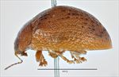
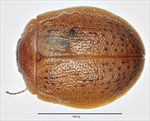
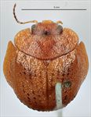
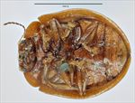
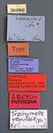
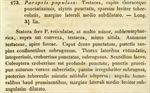

Click on images to enlarge
{kind=link}

Fig. 1. Paropsis papulosa lectotype, lateral view
{kind=link}

Fig. 2. Paropsis papulosa lectotype, dorsal view
{kind=link}

Fig. 3. Paropsis papulosa lectotype, anterior view
{kind=link}

Fig. 4. Paropsis papulosa lectotype, ventral view
{kind=link}

Fig. 5. Paropsis papulosa lectotype, labels
{kind=link}

Fig. 6. Paropsis papulosa, description
Name
Paropsis papulosa Erichson, 1842
Corresponds to
Ta42.
Diagnosis and Notes
Blackburn (1897) indicates that he did not see the type of this species, but deals with P. papulosa as part of his 'subgroup iv' (i.e., those species without "strongly marked characters", whose greatest height is considerably in front of the middle of the elytral margin). Within that group, he characterises it as:
AA. Prothorax not (or scarcely) explanate at sides;
BB. The verrucae unpunctured or nearly so;
C. Elytra not having a sharply defined discal transverse wheal-like ridge;
D. Subhumeral depression present;
EE. Elytral punctures more distinct than the rugulosity of the interstices;
FF. Elytral margins very little outsloped.
This is clearly Ta42, from comparison with the female type specimen, which has the blunt spine-like process on the rear trochanter that is characteristic of this species. Blackburn's couplet 'FF' is not at all indicative of Ta42, as the elytral margins are quite clearly outsloped in the type specimen (this character is rather variable within Trachymela species).
Type specimen
Museum für Naturkunde Berlin
Type not examined, but photos of type obtained via D.W. de Little. Type locality is Tasmania ("Vandiemensland").
Original description
Translation of original description (Figure 6) by ChatGPT, 04/2026:
Paropsis papulosa: testaceous; head and thorax very densely punctured; elytra punctate, sparsely and slightly tuberculate, the lateral margin somewhat dilated in the middle. Length 3½ lines [~7.4 mm].
Form almost that of P. reticulata, but much smaller, somewhat hemispherical, above fairly convex, testaceous, less shining. Antennae testaceous, with the apex dark. Head densely punctured, the punctures often confluent, somewhat rugose. Thorax with the sides rounded, margins entirely smooth, very densely punctured, somewhat rugose. Scutellum smooth. Elytra very densely and fairly deeply punctured, the punctures especially toward the suture somewhat arranged in rows; here and there irregularly somewhat rugose, posteriorly sprinkled with small, slightly shining tubercles; humeral angles not prominent, the lateral margin in the middle slightly and somewhat angularly dilated.
References
Erichson, W.F. 1842, "Beitrag zur Insecten-fauna von Vandiemensland, mit besonderer Berucksichtigung der geographischen Verbreitung der Insecten", Archiv für Naturgeschichte, vol. 8, no. 1, 83-287 (page 228).
Copyright © 2026. All rights reserved.